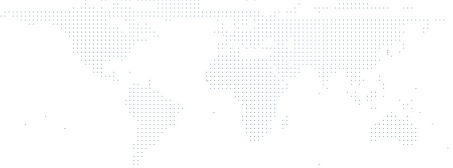

분열을 넘어, 함께 만드는 더 나은 세상Beyond division, a better world together
세계희망선언™ World Hope Declaration™
WORLD HOPE DECLARATION세계희망선언
국가·인종·종교·이념을 넘어
인류가 함께 살아갈
새로운 세계의 기준을 선언합니다.Beyond nation, race, religion and ideology,
we declare a new standard for the world we share.
From Division to Hope,
Together for a Better World.
-
195개국nations
Countries
세계희망선언 대상 국가Nations of the Declaration
-
33인/각국per nation
Representatives per nation
11개 분야 × 분야별 3인11 fields × 3 persons
-
6,435명people
Global target
195개국 × 33인 (목표치)195 nations × 33 (target)
-
21명people
Current participants
현재 참여자 수 · 기준일As of 2026-10-12
기준일As of 2026-10-12
세계희망선언 5대 원칙The Five Principles
Five PrinciplesWorld Hope Declaration
5대 원칙 자세히 보기More about the five principles-
01
이중개념Dualism
Dualism이중개념 이중개념을 인정하라.Recognize Dualism. -
02
종속구조Dependent Structure
Dependent Structure종속구조 종속구조를 직시하라.Face the Dependent Structure. -
03
수평논리Horizontal Logic
Horizontal수평논리 수평논리를 적용하라.Apply Horizontal Logic. -
04
중심기축Centrium
Centrium중심기축 중심기축을 확립하라.Establish the Centrium. -
05
공평화합 R.P.U.R.P.U.
Righteousness · Peace · United 공평화합을 생활신조화하라.Make R.P.U. a Way of Life.
The World Hope Declaration
인류와 지구의 더 나은 미래를 위해,
지금, 세계가 함께 희망을 선언합니다.Now, the World Declares Hope
for a Better Future for All.
From Division to Reconciliation, From Despair to Hope분열을 넘어 화해로, 절망을 넘어 희망으로
이제 분열은 더 이상 그만!
— 취지문 중— from our statement of purpose
이제 이 땅에 하나의 희망을 선포합시다.Enough division!
Now let us proclaim one hope over this land.
세계희망선언위원회가 인류 모두가 공감할 희망선언문을 연구·채택하고, 각국의 대표 33인이 선언하며, 세계희망연대가 그 실천 사항들을 입체적으로 전개합니다.The World Hope Declaration Council researches and adopts a Declaration of Hope that all humanity can embrace; 33 representatives of each nation proclaim it; and the World Hope Declaration Network carries out its commitments in every dimension.
취지문 전문 읽기Read the Statement of Purpose 비전과 미션 보기See our Vision & Mission
The Declaration
세계희망선언문The Declaration
선언문에는 5대 원칙과 평화·지구환경·사람·연대·실천의 5대 가치가 담겨 있습니다.The Declaration sets out five principles and five values: Peace, Planet, People, Partnership and Action.
-
이중개념을 인정하라.Recognize Dualism.
우리는 세상에 존재하는 두 가지 차원의 개념(절대와 상대, 영과 물질, 선과 악, 이상과 현실)을 인정하고, 그 구조를 올바로 이해한다.Acknowledge the twofold reality (absolute and relative, spirit and matter, good and evil, ideal and reality) and understand its structure correctly.
-
종속구조를 직시하라.Face the Dependent Structure.
개인, 사회, 국가, 인류, 자연이 서로 연결된 종속구조 속에 있음을 직시하고, 그 영향을 깊이 인식한다.Recognize that individuals, society, nations, humanity, and nature are in an interconnected dependent structure, and understand its impact deeply.
-
수평논리를 적용하라.Apply Horizontal Logic.
지배와 경쟁이 아닌, 존중과 협력의 수평적 논리를 모든 영역에 적용한다.Apply the horizontal logic of respect and cooperation instead of dominance and competition to all areas of life.
-
중심기축을 확립하라.Establish the Centrium.
변화하는 세상 속에서도 흔들리지 않는 중심기축(진리, 사랑, 생명, 창조질서)을 확립하여 모든 가치와 방향의 기준으로 삼는다.Establish an unshakable central axis (truth, love, life, creation order) as the standard for all values and directions, even in a changing world.
-
공평화합을 생활신조화하라.Make R.P.U. a Way of Life.
의(義, righteousness), 평화(peace), 연합(united)을 삶의 원리로 삼아, 개인과 공동체, 인류와 지구가 함께 살아가는 길을 실천한다.Live by righteousness, peace, and unity, and put them into practice as the path for individuals, communities, humanity, and the Earth to live together.
Five Values
세계희망선언 5대 가치The Five Values
-
평화Peace
Peace평화
분쟁을 넘어
화해와 공존으로From Conflict to Reconciliation and Coexistence -
지구환경Planet
Planet지구환경
지구를 지키는
책임 있는 실천으로For a Greener and Healthier Earth -
사람People
People사람
모든 생명의 존엄과
더 나은 삶을 위해For the Dignity of All Life and a Better Life for Humanity -
연대Partnership
Partnership연대
다양한 가치의 연대로
함께 만드는 변화Together in Diversity for Lasting Change -
실천Action
Action실천
오늘의 선언을
내일의 현실로From Today’s Declaration to Tomorrow’s Reality
Global 33
세계희망선언 글로벌 대표Global Representatives
각국 33인 = 11개 분야 × 각 3인33 per nation = 11 fields × 3 persons each
세계희망선언의 정신에 동의하고 지구와 인류의 더 나은 미래를 위해 헌신하는 사람들 — 나라마다 11개 분야에서 각 3인씩, 33인의 글로벌 대표를 선정합니다.People who share the spirit of the World Hope Declaration and devote themselves to a better future for humanity and the Earth — in every nation, 33 Global Representatives: 3 in each of 11 fields.
추천 절차Nomination steps
- STEP 01
추천서 제출Submit
분야를 골라 온라인 추천서를 보내거나 전화로 추천합니다.Choose a field and send the online form, or call us.
- STEP 02
접수 확인Confirmation
담당자가 접수 내용과 피추천인 본인의 동의를 확인합니다.Our staff confirm the details and the nominee’s consent.
- STEP 03
검토·선정Review
세계희망선언위원회가 분야별 기준에 따라 검토합니다.The Council reviews nominations by field.
- STEP 04
선정 안내Notification
선정되신 분께 개별로 안내드립니다.Selected nominees are notified individually.
※ 추천 절차는 확정 시 바뀔 수 있습니다. 추천이 곧 선정을 뜻하지는 않습니다.※ The process may change once finalized. A nomination does not guarantee selection.
World Hope Map
함께하는 나라들Nations Joining Together
한 나라의 33인에서 세계 각국으로 — 함께 하나의 글로벌 대표 네트워크를 이룹니다.From 33 people in one nation to every nation of the world — together forming one global network of representatives.
세계 각국 33인 × 195개국 = 6,435인 (목표치)33 per nation × 195 nations = 6,435 representatives (target)
참여 국가Participating nations1/ 195
- 대한민국 · 글로벌 대표 33인 선정 진행 중Republic of Korea · Selecting 33 Global Representatives
기준일As of 2026-10-12


Chairman’s Greeting
이 땅에 진정 희망이 넘친다고 생각하십니까?Do you truly believe this land is overflowing with hope?
다시 한 번 묻고 싶습니다. 희망사항입니까? 아니면 진짜 희망이 역력히 보입니까?Let me ask once more: is it merely wishful thinking — or can you clearly see real hope?
세계희망선언위원회는 인류 모두가 공감할 희망선언문을 연구, 채택해 각국의 대표 33인에 의해 선언하고, 또한 세계희망연대를 통하여 실천 사항들을 입체적으로 전개하면서, 우리 주변에 도사리고 있는 각종 위기로부터 나와 이웃, 더 나아가 인류를 보호하고 인도하는 희망의 나침판이 될 것입니다.The World Hope Declaration Council will research and adopt a Declaration of Hope that all humanity can embrace, to be proclaimed by 33 representatives of the nations. Through the World Hope Declaration Network, it will carry out its practical commitments in every dimension, becoming a compass of hope that protects and guides me, my neighbors and, further, all of humanity from the many crises lurking around us.
Join Us
공동의 선언, 하나의 인류One Declaration, One Humanity
분열을 넘어, 하나의 희망으로.
세계희망선언의 정신에 동의하신다면, 지금 선언에 함께해 주세요.From Division to Hope, Together for a Better World.
If you share the spirit of the World Hope Declaration, join the declaration today.
-
01Declare
선언 참여 신청Join the Declaration
국가·인종·종교·이념을 넘어 인류가 함께 살아갈 새로운 세계의 기준 — 세계희망선언에 함께하실 분은 신청서를 남겨 주세요.Beyond nation, race, religion and ideology — a new standard for the world we share. If you would like to join the World Hope Declaration, please send us this application.
-
02Nominate
글로벌 대표 추천Nominate a Representative
세계희망선언의 정신에 동의하고 지구와 인류의 더 나은 미래를 위해 헌신하는 분을 11개 분야 가운데 해당 분야로 추천해 주세요.Do you know someone who shares the spirit of the World Hope Declaration and is devoted to a better future for humanity and the Earth? Nominate them in one of the 11 fields.
-
03Messages of Hope
희망 응원 메시지Messages of Hope
한마디의 응원이 큰 힘이 됩니다.A single word of encouragement goes a long way.
소망의 하나님이 모든 기쁨과 평강을 믿음 안에서 너희에게 충만하게 하사
성령의 능력으로 소망이 넘치게 하시기를 원하노라Now the God of hope fill you with all joy and peace in believing,
로마서 15장 13절Romans 15:13 (KJV) 성경전서 개역개정판 © 대한성서공회 1998
that ye may abound in hope, through the power of the Holy Ghost.